Sobre ella:
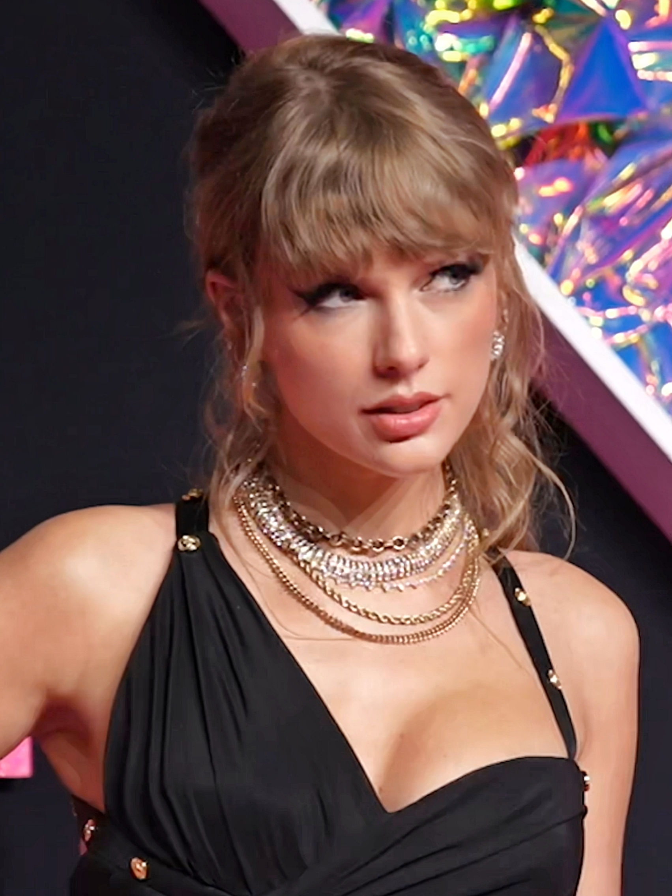
Taylor Alison Swift (West Reading, Pensilvania, 13 de diciembre de 1989) es una cantautora estadounidense. Sus composiciones autobiográficas y sus reinvenciones artísticas la han convertido en un icono cultural del siglo XXI.[nota 1] Es la artista musical con mayores ingresos por conciertos en directo, la mujer más rica del mundo de la música y una de las artistas musicales con más ventas de todos los tiempos. Swift firmó con Big Machine Records en 2005 y debutó como cantante de country con los álbumes Taylor Swift (2006) y Fearless (2008). Los sencillos «Teardrops on My Guitar», «Love Story» y «You Belong with Me» tuvieron un gran éxito tanto en las emisoras de radio country como en las de pop. Speak Now (2010) amplió su sonido country pop con influencias rock y Red (2012) presentó una producción más pop. Recalibró su identidad artística del country al pop con el álbum de synth pop 1989 (2014) y de hip hop Reputation (2017). A lo largo de la década de 2010, acumuló los números uno del Billboard Hot 100 «We Are Never Ever Getting Back Together», «Shake It Off», «Blank Space», «Bad Blood» y «Look What You Made Me Do».
Después de firmar con Republic Records en 2018, Swift volvió a grabar cuatro de sus álbumes de Big Machine debido a una disputa con el sello discográfico,[nota 2] lo que provocó un debate en la industria sobre los derechos de los artistas. Lanzó el ecléctico álbum pop Lover (2019), los álbumes indie folk Folklore y Evermore (ambos en 2020), los álbumes pop minimalistas Midnights (2022) y The Tortured Poets Department (2024) y el álbum soft rock The Life of a Showgirl (2025). Entre sus sencillos número uno en la lista Billboard Hot 100 en la década de 2020 se encuentran «Cardigan», «Willow», «All Too Well», «Anti-Hero», «Cruel Summer», «Is It Over Now?» y «Fortnight» «The Fate of Ophelia» y «Opalite». Su gira The Eras Tour (2023-2024) es la gira de conciertos más taquillera de todos los tiempos. La película que la acompaña, The Eras Tour (2023), se convirtió en la película de concierto más taquillera de la historia. Swift es la primera artista en vender más de un millón de copias de cada uno de sus siete álbumes durante la primera semana en Estados Unidos y ha sido nombrada artista discográfica global del año por la IFPI en cinco ocasiones. Publicaciones como Rolling Stone y Billboard la han incluido entre los mejores artistas de todos los tiempos. Es la primera persona del mundo artístico en ser nombrada persona del año por la revista Time (2023). Entre sus galardones se incluyen 14 premios Grammy, entre ellos un récord de cuatro premios al álbum del año, y un premio Primetime Emmy. Es la artista más premiada de los premios American Music, los Billboard Music Awards y los MTV Video Music Awards. Swift, que es objeto de una amplia cobertura mediática, cuenta con una base de fanes global conocida como swifties.
Vida y carrera musical
Primeros años
Taylor Alison Swift nació el 13 de diciembre de 1989 en West Reading, Pensilvania. Su nombre proviene del cantautor James Taylor; sus padres eligieron un nombre unisex a propósito. Su padre, Scott Kingsley Swift, era agente de bolsa de Merrill Lynch, y su madre, Andrea Gardner Swift (de soltera Finlay), trabajaba como ejecutiva de mercadotecnia de fondos mutualistas. El hermano menor de Swift, Austin, es actor. Los hermanos son de ascendencia escocesa, inglesa y alemana, con ascendencia italiana e irlandesa lejana. Su abuela materna, Marjorie Finlay (de soltera Moehlenkamp), era cantante de ópera, y sus cantos en la iglesia se convirtieron en uno de los primeros recuerdos musicales de Swift.
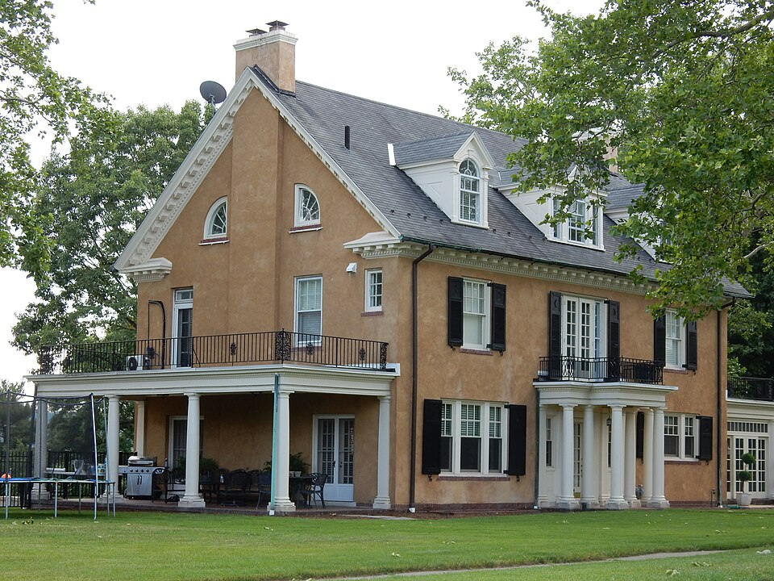
Durante su infancia, Swift pasó las vacaciones navideñas en una granja de árboles de Navidad en Pensilvania, y los veranos en la casa de vacaciones de su familia en Stone Harbor, Nueva Jersey, donde ocasionalmente interpretaba canciones acústicas en una cafetería local. Criada en el cristianismo, cursó preescolar en una escuela Montessori dirigida por las Hermanas Franciscanas Bernardinas antes de trasladarse a la escuela Wyndcroft en Pottstown. Cuando su familia se mudó a Wyomissing, asistió al Wyomissing Area Junior/Senior High School. A los nueve años, aspiraba a una carrera en el teatro musical: actuaba en festivales locales y en producciones de la Berks Youth Theatre Academy, y viajaba regularmente a la ciudad de Nueva York para tomar clases de canto y actuación. Después de ver un documental sobre Faith Hill, se decidió a seguir una carrera en la música country en Nashville, Tennessee. A los 11 años, Swift viajó a Nashville con su madre para visitar discográficas y presentar maquetas de versiones de canciones de Dolly Parton y Dixie Chicks. Todas las discográficas la rechazaron, lo que la llevó a centrarse en componer canciones. A los 12 años comenzó a aprender a tocar la guitarra con la ayuda de Ronnie Cremer, un técnico informático y músico local que también ayudó a Swift a componer una canción original. En 2003, ella y sus padres comenzaron a trabajar con el representante artístico Dan Dymtrow. Con su ayuda, Swift fue modelo para Abercrombie & Fitch e incluyó una canción original en un CD recopilatorio de Maybelline y, a los 13 años, firmó un contrato de desarrollo artístico con RCA Records. Para ayudar a Swift a abrirse camino en la escena de la música country, su padre se trasladó a la oficina de Merrill Lynch en Nashville cuando ella tenía 14 años, y la familia se mudó a Hendersonville, Tennessee. Swift asistió al Hendersonville High School durante dos años antes de cambiarse a la Aaron Academy, que ofrecía educación en casa.
2004-2008: Inicios de su carrera y primer álbum
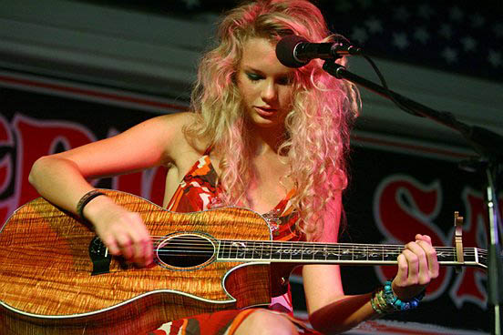
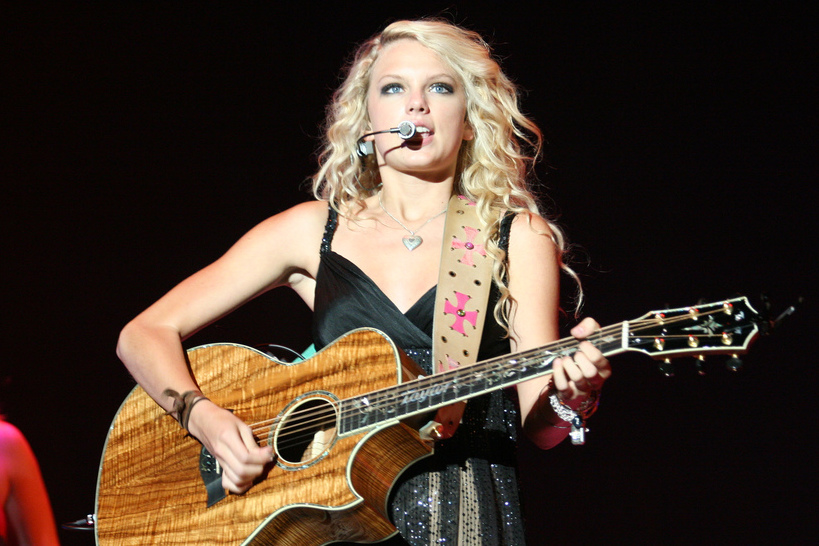
Swift firmó con Sony/ATV Tree Music Publishing en 2004; a los 14 años, se convirtió en la artista más joven en firmar con la editorial musical. En Nashville, trabajó con compositores experimentados de Music Row, entre ellos Liz Rose. Rose y Swift escribían canciones todos los martes por la tarde después del colegio. Tras un año con el contrato de desarrollo, dejó RCA Records, que decidió mantenerla en desarrollo hasta que cumpliera los 18 años. Swift tomó esta decisión porque quería publicar las canciones inmediatamente, para asegurarse de que seguían reflejando sus experiencias adolescentes.
Swift organizó un concierto de presentación en el Bluebird Café de Nashville el 3 de noviembre de 2004; entre los asistentes se encontraba Scott Borchetta, un ejecutivo musical de DreamWorks Records que planeaba crear un sello discográfico independiente, Big Machine Records. Dos semanas después del concierto, firmó un contrato discográfico con Big Machine, con la condición de que ella misma escribiera sus álbumes; su padre compró una participación del tres por ciento en la empresa. El contrato se formalizó en julio de 2005, cuando Swift puso fin a su relación laboral con Dymtrow. A finales de 2005, trabajó cuatro meses en la grabación de su álbum debut, Taylor Swift, con el productor Nathan Chapman.
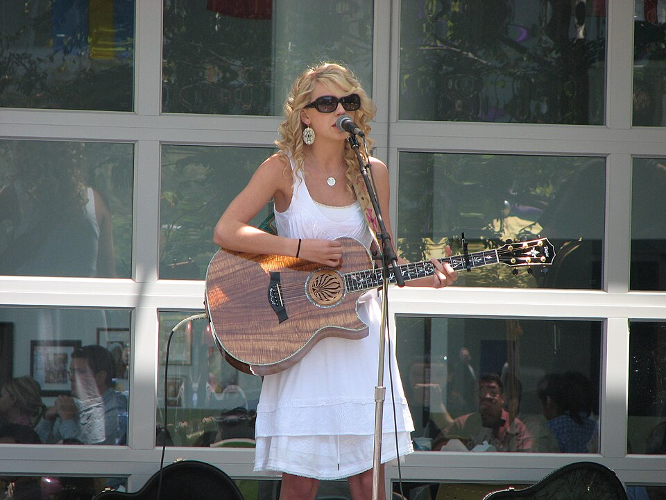
El primer sencillo de Swift, «Tim McGraw», se lanzó en junio de 2006. Ella y su madre dedicaron la mitad de 2006 al envío de copias promocionales de la canción a emisoras de radio country de todo Estados Unidos. Taylor Swift se lanzó el 24 de octubre de 2006. En la lista Billboard 200 de Estados Unidos, el álbum alcanzó el número cinco y permaneció 157 semanas, la estancia más larga de un álbum en la década de 2000. Con Taylor Swift, se convirtió en la primera artista femenina de música country en escribir o coescribir todas las canciones de un álbum debut certificado como disco de platino. El álbum se promocionó con una gira radiofónica de seis meses y Swift fue telonera de otros artistas country, como Rascal Flatts en 2006, y George Strait, Brad Paisley, y Tim McGraw y Faith Hill en 2007. Volvió a actuar como telonera de Rascal Flatts en 2008, cuando salía con el cantante Joe Jonas. Swift lanzó cuatro sencillos más en 2007 y 2008: «Teardrops on My Guitar», «Our Song», «Picture to Burn» y «Should've Said No». «Our Song» y «Should've Said No» alcanzaron el número uno en la lista Hot Country Songs; con «Our Song», Swift se convirtió en la persona más joven en escribir y cantar por sí sola un sencillo country número uno. «Teardrops on My Guitar» fue el sencillo que supuso el gran salto de Swift a las emisoras de radio y las listas de éxitos mainstream, al alcanzar el top 10 de las listas Pop Songs, Adult Pop Songs y Adult Contemporary. Sus siguientes lanzamientos fueron el EP navideño The Taylor Swift Holiday Collection en octubre de 2007, y el EP exclusivo de Walmart Beautiful Eyes en julio de 2008. Swift se convirtió en la persona más joven en recibir el premio al compositor/artista del año de la Nashville Songwriters Association en 2007. En la 50.ª edición de los Premios Grammy en 2008, recibió la nominación a mejor artista revelación.
2008-2010: Fearless
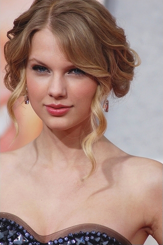
El segundo álbum de estudio de Swift, Fearless, se lanzó el 11 de noviembre de 2008 en Norteamérica, y en marzo de 2009 en otros mercados. Fearless pasó 11 semanas en lo más alto de la lista Billboard 200, lo que lo convirtió en su primer número uno y en el álbum country femenino que más tiempo permaneció en lo más alto de las listas; fue el álbum más vendido de 2009 en Estados Unidos. El primer sencillo del álbum, «Love Story», se convirtió en la primera canción country en encabezar la lista Pop Songs, y su tercer sencillo, «You Belong with Me», fue la primera canción country en encabezar la lista Radio Songs de Billboard, que incluye todos los géneros; ambos alcanzaron el top 5 de la lista Billboard Hot 100 y llegaron a lo más alto de la lista Hot Country Songs. Otros tres sencillos, «White Horse», «Fifteen» y «Fearless», alcanzaron el top 10 de la lista Hot Country Songs. En 2009, Swift fue telonera de la gira de Keith Urban y se embarcó en su primera gira como cabeza de cartel, el Fearless Tour. Fearless se convirtió en el álbum country más premiado de todos los tiempos. Ganó los tres premios más importantes para un álbum country: álbum del año tanto en los Country Music Association Awards como en los Academy of Country Music Awards en 2009, y mejor álbum country en los Grammy Awards en 2010. En los Grammy, también ganó álbum del año, y «White Horse» ganó mejor canción country y mejor interpretación vocal country femenina. También en 2009, Swift recibió el nombramiento de artista del año tanto por los premios American Music como por Billboard, y artista del año por los Country Music Association Awards, lo que la convirtió en la persona más joven en ganar este honor. «You Belong with Me» ganó el premio al mejor vídeo femenino en los MTV Video Music Awards. Su discurso de agradecimiento fue interrumpido por el rapero Kanye West, un incidente que se conoció como «Kanyegate» y se convirtió en objeto de controversia y de una amplia cobertura mediática. Swift colaboró con otros músicos en 2009. Participó en «Half of My Heart» de John Mayer, con quien mantuvo una relación sentimental a finales de ese mismo año. Escribió «Best Days of Your Life» para Kellie Pickler, coescribió y participó en «Two Is Better Than One» de Boys Like Girls, y escribió y grabó, «You'll Always Find Your Way Back Home» y «Crazier», para la banda sonora de Hannah Montana: la película, en la que hizo un cameo. Debutó como actriz en la comedia romántica de 2010 Valentine's Day y escribió «Today Was a Fairytale» para su banda sonora. «Today Was a Fairytale» alcanzó el número uno en la lista Canadian Hot 100. Durante el rodaje de Valentine's Day en octubre de 2009, Swift salió con su coprotagonista Taylor Lautner. En televisión, debutó como una adolescente rebelde en un episodio de CSI: Crime Scene Investigation y presentó y actuó como invitada musical en Saturday Night Live; fue la primera presentadora en escribir su propio monólogo de apertura.
2010-2014: Speak Now y Red
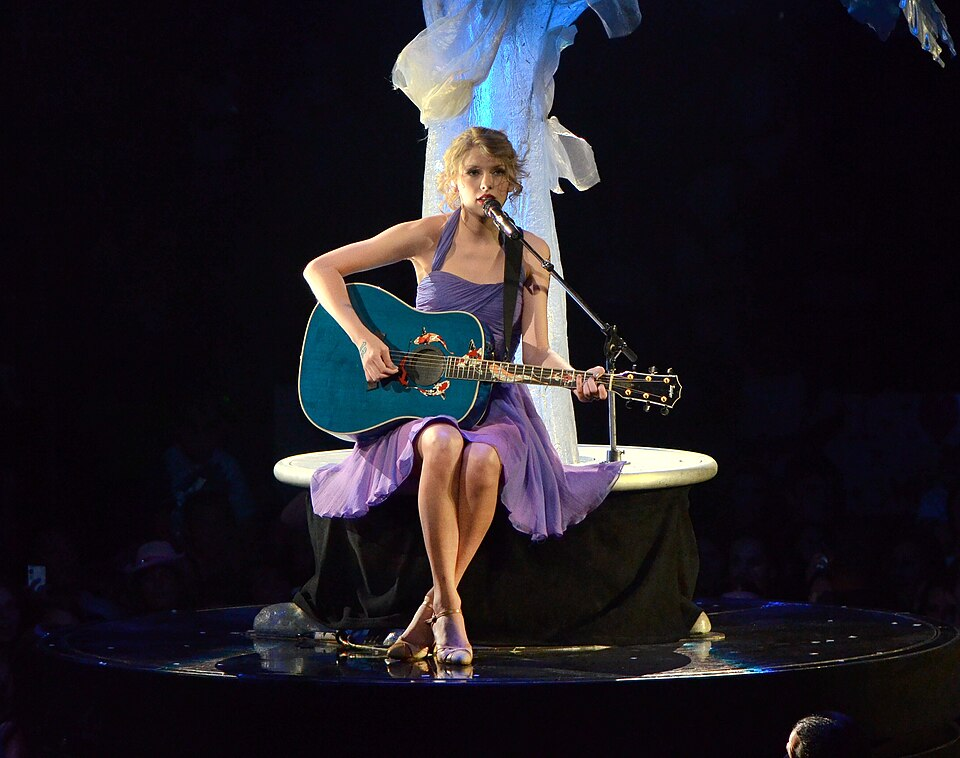
Swift compuso íntegramente su tercer álbum de estudio, Speak Now. Lanzado el 25 de octubre de 2010, Speak Now amplía el sonido country pop de Fearless e incorpora fuertes influencias del rock. Speak Now debutó en el Billboard 200 de Estados Unidos con más de un millón de copias vendidas en su primera semana, lo que supuso la cifra más alta en una sola semana para una artista country femenina. Cinco de sus sencillos —«Mine», «Back to December», «Mean», «Sparks Fly» y «Ours»— entraron en el top tres de Hot Country Songs; «Sparks Fly» y «Ours» alcanzaron el número uno. «Mine» alcanzó el número tres y fue el sencillo que más alto llegó en la lista Billboard Hot 100. Swift se embarcó en la gira mundial Speak Now World Tour entre febrero de 2011 y marzo de 2012. En 2011, Swift recibió el galardón de mujer del año por Billboard, artista del año tanto por los Academy of Country Music Awards como por los Country Music Association Awards, y artista del año en los premios American Music. En 2012 volvió a ganar el premio a la artista del año otorgado por la Academia de la Música Country. En la 54.ª edición de los premios Grammy de 2012, «Mean» ganó los premios a la mejor canción country y a la mejor interpretación country solista. Tras el lanzamiento de Speak Now, Swift mantuvo una relación con el actor Jake Gyllenhaal.
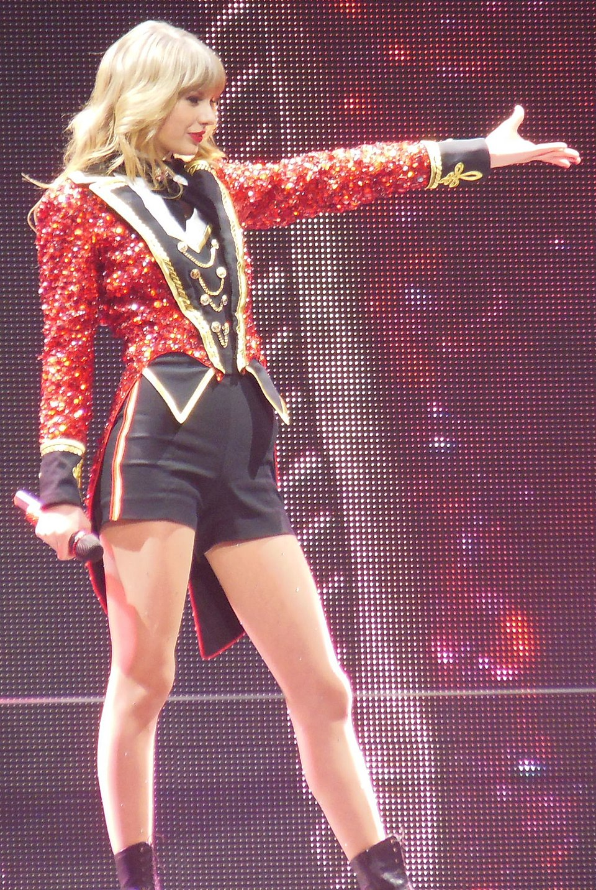
El 22 de octubre de 2012, Swift lanzó su cuarto álbum de estudio, Red, que contó con colaboraciones con Chapman y nuevos productores, entre ellos Max Martin, Shellback, Dan Wilson, Jeff Bhasker, Dann Huff y Butch Walker. Concebido como un disco que iba más allá de los lanzamientos country pop de Swift, Red incorpora estilos eclécticos de pop y rock, como el britrock, el dubstep y el dance pop, lo que provocó un debate crítico sobre la condición de Swift como artista country. El álbum debutó en el número uno de la lista Billboard 200 con 1.21 millones de ventas, lo que lo convirtió en el álbum country más vendido en la historia de Estados Unidos. Fue el primer álbum de Swift en alcanzar el número uno en el Reino Unido. Durante la promoción de Red, Swift mantuvo una relación sentimental con el heredero político Conor Kennedy y, posteriormente, con el cantante Harry Styles. Los dos sencillos más exitosos de Red, «We Are Never Ever Getting Back Together» y «I Knew You Were Trouble», alcanzaron el número uno y el número dos en la lista Billboard Hot 100. Ambos también llegaron al top cinco de la lista de sencillos del Reino Unido, y el primero fue el primer número uno de Swift en Estados Unidos. Otros dos sencillos, «Begin Again» y «Red», alcanzaron el top 10 de la lista Billboard Hot 100, mientras que otros dos, «Everything Has Changed» y «22», alcanzaron el top 10 de la lista de sencillos del Reino Unido. La gira Red Tour se desarrolló entre marzo de 2013 y junio de 2014 y se convirtió en la gira country más taquillera, con unos ingresos de 150.2 millones de dólares al finalizar. Swift recibió el nombramiento de artista del año en los premios American Music de 2013. Swift compuso y grabó dos canciones para la banda sonora de la película distópica de 2012 Los juegos del hambre: «Eyes Open» y «Safe & Sound». Esta última, coescrita con The Civil Wars y T-Bone Burnett, ganó el premio Grammy a la mejor canción escrita para medios audiovisuales en 2013. Escribió y grabó «Sweeter than Fiction» para la banda sonora de la película biográfica de 2013 Un talento increíble, y participó como vocalista invitada en el sencillo de 2012 de B.o.B «Both of Us» y en el sencillo de 2013 de Tim McGraw «Highway Don't Care». Entre sus papeles como actriz se incluyen un papel de doblaje en la película animada de 2012 The Lorax, un cameo en un episodio de 2013 de la serie New Girl, y un papel secundario en la película distópica de 2014 The Giver.
2014-2018: 1989 y Reputation
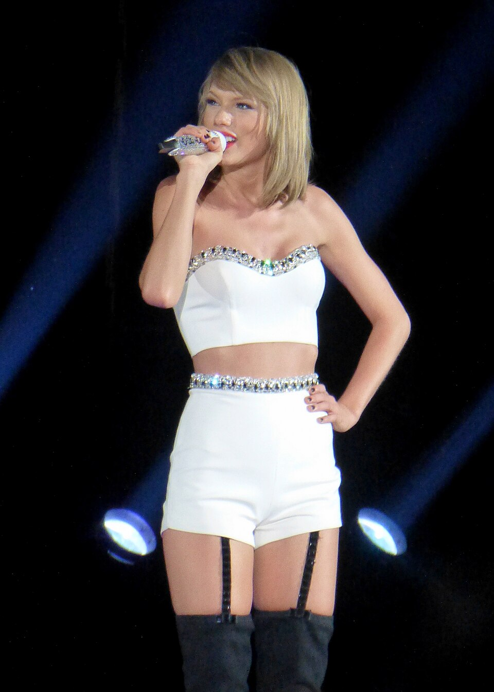
Swift se mudó de Nashville a Nueva York en marzo de 2014[nota 3] y transformó su imagen de country a pop con su quinto álbum de estudio, 1989. Lo produjo con Martin, Shellback, Chapman y los nuevos colaboradores Jack Antonoff, Imogen Heap, Ryan Tedder y Ali Payami. Arraigado en el synth pop de los años 1980, 1989 incorpora arreglos electrónicos y de baile de sintetizadores, cajas de ritmos y voces procesadas. Lanzado el 27 de octubre de 2014, el álbum pasó 11 semanas en el número uno y un año en el top 10 de la lista Billboard 200. Ha vendido 14 millones de copias en todo el mundo, lo que lo convierte en el álbum más vendido de Swift. Tres de los sencillos de 1989 —«Shake It Off», «Blank Space» y «Bad Blood»— alcanzaron el número uno en la lista Billboard Hot 100; los dos primeros convirtieron a Swift en la primera mujer en sustituirse a sí misma en el primer puesto. Otros dos sencillos, «Style» y «Wildest Dreams», alcanzaron los puestos seis y cinco, lo que convirtió a 1989 en el primer álbum de Swift en tener cinco sencillos consecutivos en el top 10 de la lista Hot 100. La gira The 1989 World Tour fue la más taquillera de 2015, con unos ingresos de 250 millones de dólares. Recibió el nombramiento de mujer del año por Billboard y recibió el primer premio Dick Clark a la excelencia en los premios American Music de 2014, y «Bad Blood» ganó el premio al vídeo del año y a la mejor colaboración en los MTV Video Music Awards de 2015. En la 58.ª edición de los Premios Grammy en 2016, 1989 convirtió a Swift en la primera mujer en ganar dos veces el premio al álbum del año; también ganó el premio al mejor álbum de pop vocal, y «Bad Blood» ganó el premio al mejor vídeo musical. Durante la promoción de 1989, Swift se opuso públicamente a los servicios gratuitos de streaming musical. En julio de 2014 publicó un artículo de opinión en The Wall Street Journal para destacar la importancia de los álbumes como medio creativo para los artistas, y, en noviembre, retiró su discografía de plataformas de streaming gratuitas financiadas con publicidad, como Spotify. Big Machine mantuvo su música solo en plataformas de pago que requieren suscripción. En una carta abierta de junio de 2015, Swift criticó a Apple Music por no ofrecer regalías a los artistas durante su periodo de prueba gratuito de tres meses y amenazó con retirar su música de la plataforma, lo que llevó a Apple Inc. a anunciar que pagaría a los artistas durante el periodo de prueba gratuito. Big Machine devolvió el catálogo de Swift a Spotify y otras plataformas de streaming gratuitas en junio de 2017.
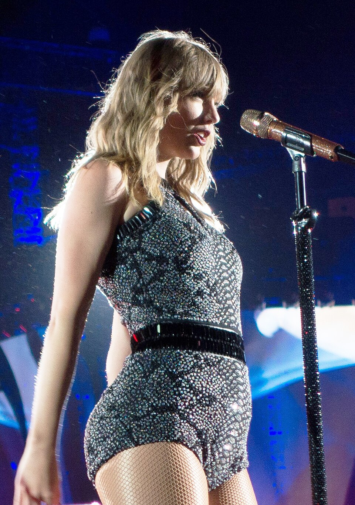
Swift salió con el DJ Calvin Harris desde marzo de 2015 hasta junio de 2016. Ambos coescribieron el sencillo de EDM «This Is What You Came For», que contaba con la voz de Rihanna; inicialmente, Swift apareció en los créditos bajo el seudónimo de Nils Sjöberg. «Better Man», el sencillo de 2016 que Swift escribió para el grupo vocal country Little Big Town, ganó el premio de la Asociación de Música Country a la canción del año. Grabó «I Don't Wanna Live Forever» con Zayn Malik para la banda sonora de la película Cincuenta sombras más oscuras, de 2017; la canción fue el sencillo más exitoso de la franquicia Cincuenta sombras en la lista Billboard Hot 100, donde alcanzó el número dos. En abril de 2016, Kanye West lanzó el sencillo «Famous», en el que hace referencia a Swift en la frase «I made that bitch famous». Swift criticó a West y dijo que nunca había dado su consentimiento para esa letra, pero West afirmó que había recibido su aprobación, y su entonces esposa, Kim Kardashian, publicó unos vídeos en los que se veía a Swift y West hablando amistosamente por teléfono sobre la canción. Aunque se demostró que los clips habían sido editados deliberadamente, la controversia convirtió a Swift en objeto de un movimiento de «cancelación» en Internet, en el que sus detractores la tacharon de falsa y calculadora «serpiente». A finales de 2016, tras salir brevemente con el actor Tom Hiddleston, Swift comenzó una relación de seis años con el actor Joe Alwyn y se tomó un descanso. En agosto de 2017, Swift presentó una contrademanda y ganó un juicio contra David Mueller, un antiguo locutor de radio de KYGO-FM, que la demandó por daños y perjuicios por la pérdida de su empleo. Cuatro años antes, ella informó a los superiores de Mueller que él la había agredido sexualmente al manosearla en un evento. Las controversias públicas influyeron en el sexto álbum de estudio de Swift, Reputation, que explora temas como la fama, el drama y la búsqueda del amor en medio de las turbulentas relaciones. Se trata de un álbum principalmente electropop, cuya producción maximalista experimenta con estilos urbanos de hip hop y R&B. Lanzado el 10 de noviembre de 2017, Reputation debutó en lo más alto de la lista Billboard 200 con 1.21 millones de ventas en Estados Unidos y también alcanzó el número uno en Australia, Canadá y el Reino Unido. El primer sencillo de Reputation, «Look What You Made Me Do», encabezó la lista Billboard Hot 100 con las mayores ventas y reproducciones en streaming de 2017, y fue el primer sencillo de Swift en alcanzar el número uno en el Reino Unido. Los sencillos «...Ready for It?», «End Game» y «Delicate» se lanzaron en las emisoras de radio pop y todos ellos alcanzaron el top 20 de la lista Billboard Hot 100. En 2018, Swift colaboró en «Babe» de Sugarland, superó a Whitney Houston como la artista más premiada en los premios American Music y se embarcó en la gira Reputation Stadium Tour, que recaudó 345.7 millones de dólares en todo el mundo.
2018-2021: Lover, Folklore y Evermore
En noviembre de 2018, Swift firmó un contrato discográfico con Universal Music Group, que promocionó sus álbumes bajo el sello Republic Records. El contrato incluía una cláusula por la que Swift conservaba la propiedad de sus másteres. Además, en caso de que Universal vendiera cualquier parte de su participación en Spotify, se comprometía a distribuir una parte no recuperable de los ingresos entre sus artistas.
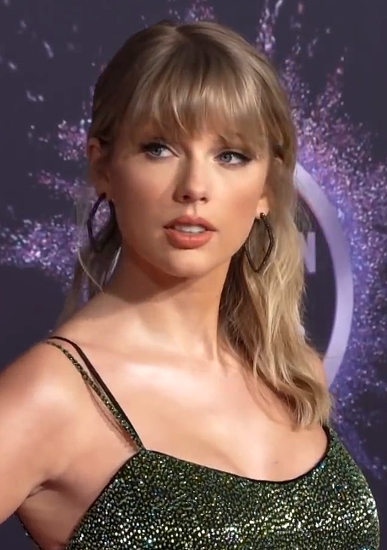
El primer álbum de Swift con Republic Records y el séptimo en total, Lover, se lanzó el 23 de agosto de 2019. Lo produjo junto con Antonoff, Louis Bell, Frank Dukes y Joel Little. Lover alcanzó el primer puesto en las listas de éxitos de países como Australia, Canadá, Irlanda, México, Noruega, Suecia, Reino Unido y Estados Unidos, y fue el álbum más vendido a nivel mundial por un artista en solitario en 2019. Tres de sus sencillos, «Me!», «You Need to Calm Down» y «Lover», se lanzaron en 2019 y alcanzaron el top 10 de la lista Billboard Hot 100. «The Man» se lanzó en 2020 y alcanzó el top 30, y «Cruel Summer» volvió a ser un éxito en 2023, cuando alcanzó el número uno. En 2019, Swift recibió el galardón como artista de la década por los premios American Music y mujer de la década por Billboard, y se convirtió en la primera artista femenina en ganar el premio al vídeo del año por un vídeo autodirigido con «You Need to Calm Down» en los MTV Video Music Awards. Durante la promoción de Lover, Swift se vio envuelta en una disputa pública con el representante artístico Scooter Braun después de que este comprara Big Machine Records, incluyendo los derechos de sus álbumes bajo ese sello. Swift afirmó que Big Machine solo le permitiría adquirir las grabaciones originales si a cambio entregaba un álbum nuevo por cada uno de los antiguos en virtud de un nuevo contrato, que ella se negó a firmar. En noviembre de 2020, Swift comenzó a regrabar su catálogo anterior, lo que le permitiría controlar las licencias de sus canciones para uso comercial. En febrero de 2020, Swift firmó un contrato editorial con Universal Music Publishing Group tras expirar su contrato de 16 años con Sony/ATV. En medio de la pandemia de COVID-19 en 2020, Swift lanzó por sorpresa dos «álbumes hermanos» que grabó y produjo con Antonoff y Aaron Dessner: Folklore el 24 de julio y Evermore el 11 de diciembre. Joe Alwyn coescribió y coprodujo varias canciones bajo el seudónimo de William Bowery. Ambos álbumes incorporan sonidos indie folk e indie rock apagados y atmosféricos con orquestaciones; cada uno de ellos tuvo el respaldo de tres sencillos dirigidos a los formatos de radio pop, country y triple A de Estados Unidos. Los sencillos fueron «Cardigan», «Betty» y «Exile» de Folklore, y «Willow», «No Body, No Crime» y «Coney Island» de Evermore. Folklore y «Cardigan» convirtieron a Swift en la primera artista en debutar con un álbum y una canción número uno en la misma semana en Estados Unidos; volvió a lograr la hazaña con Evermore y «Willow». Swift ganó el premio a la artista del año en los premios American Music de 2020 y el premio al álbum del año por Folklore en la 63.ª edición de los premios Grammy en 2021, lo que la convirtió en la primera mujer en ganar tres veces el premio Grammy al álbum del año. Interpretó a Bombalurina en la adaptación cinematográfica del musical Cats (2019) de Andrew Lloyd Webber, para el que coescribió y grabó la canción original «Beautiful Ghosts». El documental Miss Americana, que narraba partes de la vida y la carrera de Swift, se estrenó en el Festival de Cine de Sundance de 2020.
2021-2023: Regrabaciones y Midnights
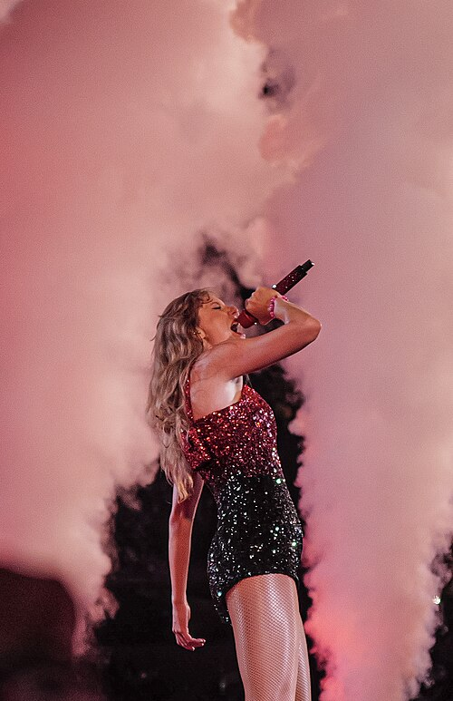
Swift lanzó dos álbumes regrabados en 2021: Fearless (Taylor's Version) en abril y Red (Taylor's Version) en noviembre. Ambos alcanzaron el primer puesto de la lista Billboard 200, y el primero fue el primer álbum regrabado en lograrlo. El segundo ayudó a Swift a superar a Shania Twain como la artista femenina con más semanas en el número uno de la lista Top Country Albums. La canción «All Too Well (10 Minute Version)» de Red (Taylor's Version) se convirtió en la canción más larga de la historia en alcanzar el número uno de la lista Billboard Hot 100.
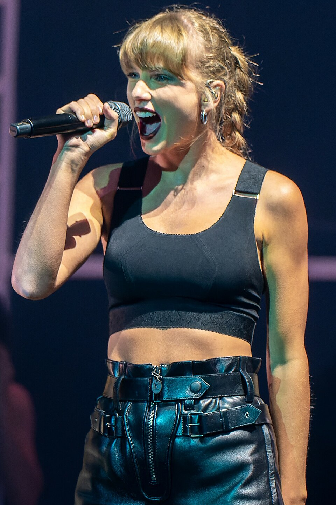
El décimo álbum de estudio de Swift, Midnights, se publicó el 21 de octubre de 2022. El álbum presenta un sonido minimalista de electropop y synth pop con elementos de hip hop, R&B y electrónica. Midnights fue el quinto álbum de Swift en debutar en lo más alto de la lista Billboard 200, con un millón de ventas en su primera semana en Estados Unidos. Sus temas, encabezados por el sencillo «Anti-Hero», la convirtieron en la primera artista en ocupar los diez primeros puestos de la lista Billboard Hot 100 en la misma semana. El álbum alcanzó el primer puesto en las listas de al menos otros 14 países, entre ellos Australia, Canadá, Francia, Alemania, Italia, Noruega y Suecia. Otros dos sencillos, «Lavender Haze» y «Karma», alcanzaron el número dos en la lista Billboard Hot 100. En 2023, Swift lanzó dos álbumes regrabados: Speak Now (Taylor's Version) en julio y 1989 (Taylor's Version) en octubre. El primero convirtió a Swift en la mujer con más álbumes número uno (12) en la historia de Billboard 200, por encima de Barbra Streisand, y el segundo fue su sexto álbum en vender un millón de copias en Estados Unidos durante la primera semana. El sencillo «Is It Over Now?» de 1989 (Taylor's Version) alcanzó el número uno en la lista Billboard Hot 100. Swift colaboró en «Renegade» y «Birch» (2021) de Big Red Machine, «Gasoline» (2021) de Haim, «The Joker and the Queen» de Ed Sheeran (2022), y «The Alcott» de The National (2023). Escribió y grabó «Carolina» para la banda sonora de la película de misterio de 2022 La chica salvaje, y tuvo un papel secundario en la comedia de época de 2022 Amsterdam. En 2022, Swift ganó el premio a la artista del año en los premios American Music y el premio al vídeo del año por All Too Well: The Short Film, su cortometraje autodirigido que acompaña a «All Too Well (10 Minute Version)» en los MTV Video Music Awards; All Too Well también ganó el premio Grammy al mejor vídeo musical. Al año siguiente, volvió a ganar el premio MTV Video Music Award al vídeo del año con «Anti-Hero», se convirtió en la primera artista en ocupar el primer puesto en la lista de artistas más importantes del año de Billboard en tres décadas diferentes (2009, 2015 y 2023) y tuvo cinco de los diez álbumes más vendidos del año en Estados Unidos, un récord desde que Luminate comenzó a registrar las ventas de música en Estados Unidos en 1991. En la 67.ª edición de los premios Grammy en 2025, Midnights convirtió a Swift en la primera artista en ganar cuatro veces el premio al álbum del año; también ganó el premio al mejor álbum vocal pop.
Desde 2023: The Eras Tour, The Tortured Poets Department y The Life of a Showgirl
En marzo de 2023, Swift se embarcó en The Eras Tour, que concibió como un homenaje a toda su discografía. La gira abarcó los cinco continentes hasta diciembre de 2024. Tuvo un impacto cultural, económico y político a nivel mundial y culminó con una popularidad sin precedentes para Swift, lo que dio lugar a un fenómeno que los medios de comunicación denominaron «Swiftmania». The Eras Tour se convirtió en la gira más taquillera de la historia, con unos ingresos de 2000 millones de dólares. La película del concierto recaudó 250 millones de dólares, y se convirtió en la más taquillera de su tipo, y su fotolibro vendió casi un millón de copias en su primera semana en Estados Unidos. La gira inspiró los álbumes de estudio número once y doce de Swift, The Tortured Poets Department y The Life of a Showgirl, respectivamente.
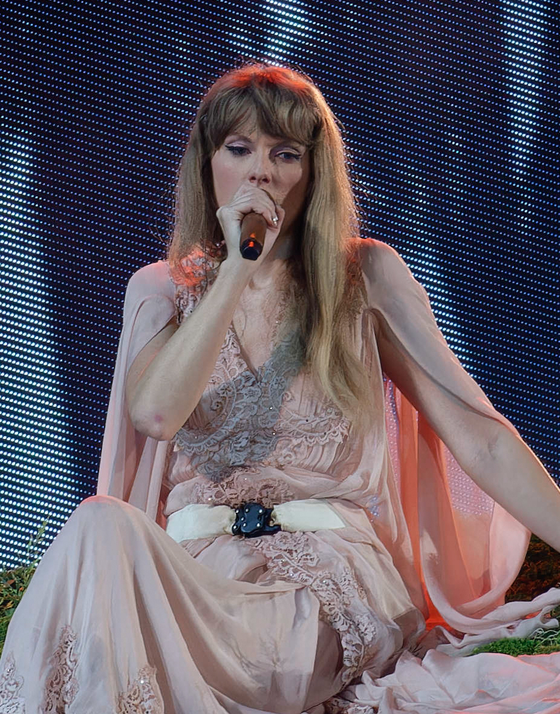
Durante The Eras Tour, surgieron controversias en torno al monopolio de Ticketmaster que provocaron un escrutinio político en Estados Unidos, una mala gestión de las instalaciones que causó una muerte en Brasil, y un acuerdo de exclusividad con Singapur que generó tensiones políticas en el sudeste asiático. En julio de 2024, tres niños murieron en un ataque con arma blanca en un taller temático sobre Swift en Southport, Inglaterra, lo que provocó disturbios civiles en el Reino Unido. Al mes siguiente, se cancelaron los conciertos de Viena tras la detención de los sospechosos que planeaban un atentado terrorista. El álbum The Tortured Poets Department se lanzó el 19 de abril de 2024. Se convirtió en el primer álbum en acumular mil millones de reproducciones en Spotify en una semana y encabezó las listas de éxitos de varios países, entre ellos Australia, Canadá, Francia, Alemania y el Reino Unido. En Estados Unidos, The Tortured Poets Department debutó en lo más alto de la lista Billboard 200 con 2.6 millones de unidades vendidas en su primera semana y se mantuvo en el número uno durante 17 semanas, lo que lo convirtió en el álbum de Swift que más tiempo ha permanecido en lo más alto. El álbum fue el más vendido a nivel mundial en 2024, con 5.6 millones de copias vendidas. Sus canciones, encabezadas por el sencillo «Fortnight», la convirtieron en la primera artista en monopolizar los 14 primeros puestos de la lista Billboard Hot 100 en la misma semana; el segundo sencillo, «I Can Do It with a Broken Heart», alcanzó el tercer puesto. Swift comenzó a salir con el jugador de fútbol americano Travis Kelce en 2023; su relación de alto perfil les valió el estatus de superpareja. En enero de 2024, se publicaron en Twitter imágenes pornográficas generadas por IA que mostraban a Swift en un contexto futbolístico, las cuales se difundieron a otras plataformas de redes sociales, lo que provocó críticas y demandas de reforma legal. El 30 de mayo de 2025, Swift finalizó la compra de los derechos de sus seis primeros álbumes de estudio originales a Shamrock Holdings, que los había adquirido a Braun en 2020. Tres meses más tarde, Swift anunció su duodécimo álbum de estudio, The Life of a Showgirl, fue publicado el 3 de octubre de 2025. El 26 de agosto de ese año, anunció su compromiso con Kelce.